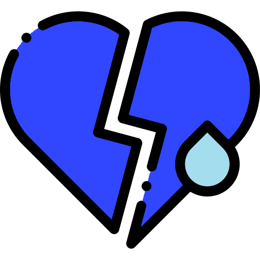

<ion-content>
	<div class="cameraWait" *ngIf="!cameraStarted">
		<ion-progress-bar class="cameraWaitBar" type="indeterminate"></ion-progress-bar>
		<div class="cameraWaitText">Please wait, the camera is starting!</div>
	</div>
	<div *ngIf="cameraStarted">
		<div *ngIf="firebaseResult | async as result">
			<div *ngFor="let face of result.faces; let i = index">
				<div class="emotionImage" *ngIf="face == 'anger'" [ngStyle]="{'left': emotionPositions[i][0], 'top': emotionPositions[i][1]}" [style.left]="emotionPositions[i][0]" [style.top]="emotionPositions[i][1]">
					
				</div>
				<div class="emotionImage" *ngIf="face == 'joy'" [ngStyle]="{'left': emotionPositions[i][0], 'top': emotionPositions[i][1]}" [style.left]="emotionPositions[i][0]" [style.top]="emotionPositions[i][1]">
					
				</div>
				<div class="emotionImage" *ngIf="face == 'sorrow'" [ngStyle]="{'left': emotionPositions[i][0], 'top': emotionPositions[i][1]}" [style.left]="emotionPositions[i][0]" [style.top]="emotionPositions[i][1]">
					
				</div>
				<div class="emotionImage" *ngIf="face == 'surprise'" [ngStyle]="{'left': emotionPositions[i][0], 'top': emotionPositions[i][1]}" [style.left]="emotionPositions[i][0]" [style.top]="emotionPositions[i][1]">
					
				</div>
			</div>
		</div>
		<ion-button class="takePhotoButton" (click)="takePicture()" >take photo!</ion-button>
	</div>
</ion-content>
